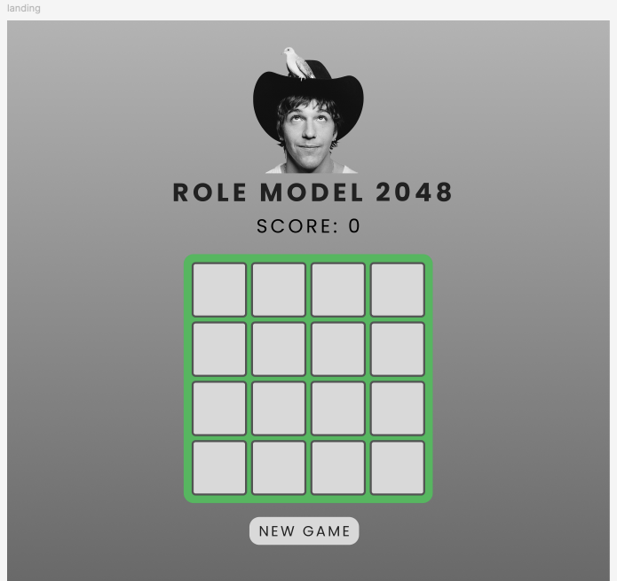
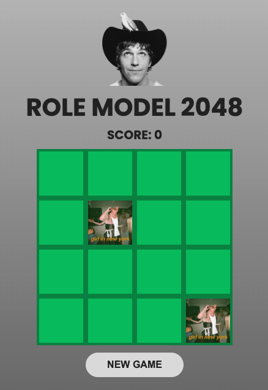
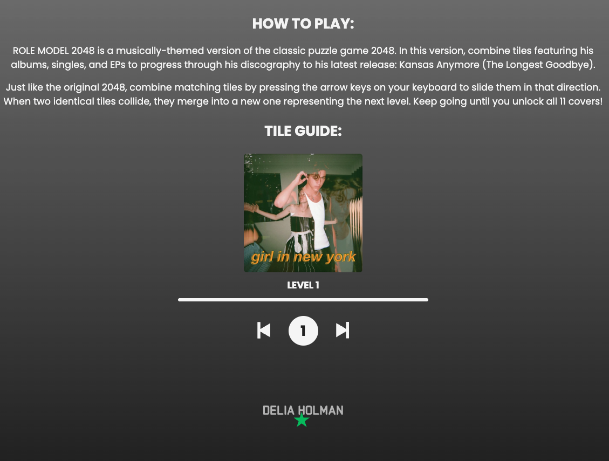

Project Overview:
ROLE MODEL 2048 is a musically-themed reimagining of the classic 2048 puzzle game. In this version, players combine tiles featuring the discography of ROLE MODEL - an American singer-songwriter known for his introspective lyrics and folk-pop sound. Instead of merging numbers, players progress through his EPs, singles, and albums, ultimately unlocking his latest release: Kansas Anymore (The Longest Goodbye).
Project Objectives:
The goal of this project was to creatively remix a familiar game format with a theme that felt meaningful and fun. I wanted to create an engaging experience for fans of ROLE MODEL's music, one that's both interactive and nostalgic. This project also gave me the opportunity to explore game logic, responsive design, and UI styling in a fun, self-directed way.
Tech Stack:
HTML
I chose HTML as the foundation for this project because it's the most direct and reliable way to structure content for a web-based game like 2048. Since this project was focused on the browser and didn't require server-side logic or templating engines, HTML was the most appropriate tool for laying out the game grid, interface, and supporting content. It allowed for full control over the markup and worked seamlessly with CSS and JavaScript, making it ideal for building an interactive experience that needed to load quickly and function smoothly across devices.
CSS
CSS was the natural choice for styling because I needed complete flexibility to match the aesthetic of ROLE MODEL's music. His brand leans into softness, minimalism, and emotional tone, so I used CSS to reflect that through color, typography, spacing, and tile design. I opted not to use utility-first frameworks like Tailwind or heavy libraries like Bootstrap because I wanted fine-grained control and a lightweight footprint for performance. Responsive layout and custom visuals were critical, and CSS gave me the freedom to create that clean, curated look.
Javascript
JavaScript was the best choice for handling the game logic and interactivity. I considered using a library like React or a game engine like Phaser, but for a lightweight browser game, pure JavaScript provided the right balance of control and simplicity. It let me build custom merging logic and state management without the overhead of a full framework. This also made it easier to integrate the discography as dynamic content, since each tile is an object with properties like title, image, and rank, and JavaScript allowed me to manage the full lifecycle of those objects during gameplay. Overall, using JavaScript gave me the freedom to explore, experiment, and learn throughout this project.
Prototype Created:
Challenges and Solutions:
One of the biggest challenges I faced was adapting the original 2048 game logic, which relies on simple number merging, to work with visual and conceptual content: album covers and music releases. Rather than using plain numbers, each tile in ROLE MODEL 2048 represents a specific release in his discography, and that meant embedding images, names, and a progression hierarchy. Using images was essential to the success of this project because album art is a key part of how fans recognize and connect with music. I felt like it wasn't just visual decoration, it's an important reference point. Including these visuals made the game more intuitive, recognizable, and immersive, especially for fans who are already familiar with ROLE MODEL's discography. However, implementing this was fairly complex. I needed to restructure the tile data into objects containing release names, image paths, and unique IDs to track merges and display correctly. Ensuring the game remained responsive and readable required careful image sizing, layout tweaks, and testing.
Final Product:
The final result is a fully playable 2048-style game themed around ROLE MODEL's music. Each tile represents a release in his career, and players progress through them chronologically. The game is responsive, visually cohesive, and offers fans a unique way to connect with the artist's work. The code is featured on GitHub and viewable via Figma for process transparency.
 What I Might Do Differently:
If I were to revisit this project, I would love to incorporate audio clips for each tile so that players could hear a sample of the song they just unlocked. I'd also consider adding animations for the tile movement and a modal pop-up with deeper context or links to listen on streaming platforms. Additionally, I'd explore storing high scores or player progress for more replay value.